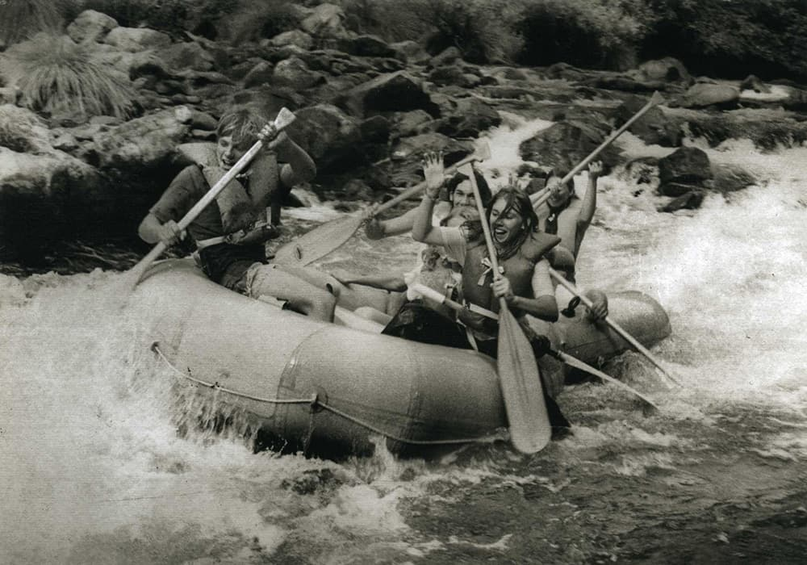

Our mission is to deliver safe, thrilling rafting adventures that inspire a love for nature and create lasting memories. We believe in the power of adventure to connect people, preserve our rivers, and transform ordinary moments into extraordinary ones. Guided by passion and respect for the outdoors, we strive to promote sustainable tourism and teamwork. "Ride the Rapids, Embrace the Adventure!"

White Water Rafting
History
### Brief History of the Company Founded in [Year], our white-water rafting company began with a simple passion for sharing the thrill of river adventures. What started as a small operation with a single raft and a handful of guides has grown into a trusted name in outdoor experiences. Based on a commitment to safety, adventure, and environmental stewardship, we’ve introduced countless adventurers to the wonders of white-water rafting.
Over the years, we’ve expanded our operations to include multiple rivers, various skill levels, and specialized tours, ranging from beginner-friendly floats to adrenaline-pumping rapids. Along the way, we’ve forged lasting partnerships with local communities and conservation groups to ensure the preservation of these natural treasures. Today, we’re proud to be a leader in sustainable adventure tourism, offering unforgettable journeys that celebrate the beauty and power of nature.
Adventure Awaits You